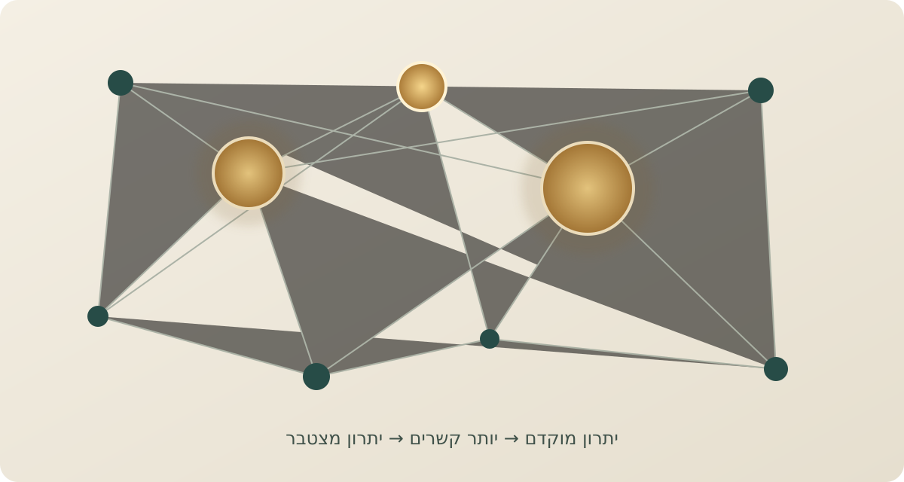

מדע
וטכנולוגיה
מהחלקיק הקטן ביותר ועד מבנה היקום.
מגזין אינטלקטואלי עצמאי
מסע בין רעיונות, תגליות ואנשים. מגזין שמחפש את החיבורים הלא־צפויים בין מדע, היסטוריה, פילוסופיה ותרבות — ומנסה להבין לא רק מה אנחנו יודעים, אלא איך הגענו לדעת אותו.
לצלול אל הכתבות ←
רעיונות בתנועה ✳01 / 02מהדורת הקריאה
סוציולוגיה · רשתות · ביולוגיה
מה מחבר בין מוניטין מדעי, רשתות חברתיות, יערות גשם ופערים בכיתה? מסע בעקבות מנגנון היתרון המצטבר.
לקריאת הכתבה ←מתמטיקה · היסטוריה של המדע
איך נוסחה פשוטה הפכה לכלי מרכזי בחיפוש אחר מספרים ראשוניים עצומים?
לקריאת הכתבה ←הערת מערכת
כל רעיון מעניין הוא פתח לעולם נוסף. אנחנו עוקבים אחרי החוטים שמחברים בין תחומי דעת, תקופות ואנשים — ומנסים להציג תמונה רחבה יותר.
מפת הסקרנות
מהחלקיק הקטן ביותר ועד מבנה היקום.
הרעיונות שמעצבים את הדרך שבה אנו מבינים את עצמנו.
הכוחות, האנשים והמקריות שעיצבו את העולם.
צורות חדשות לראות, להרגיש ולפרש את המציאות.
למה השכל הפועל?
לא עוד אוסף של עובדות.
מפה של קשרים.
אנחנו מאמינים שקריאה טובה מרחיבה את גבולות המחשבה. לא באמצעות הצפת מידע, אלא באמצעות הסבר בהיר, הקשר היסטורי, דיוק אינטלקטואלי וסקרנות שאינה מסתפקת במובן מאליו.
השכל הפועלמגזין של רעיונות